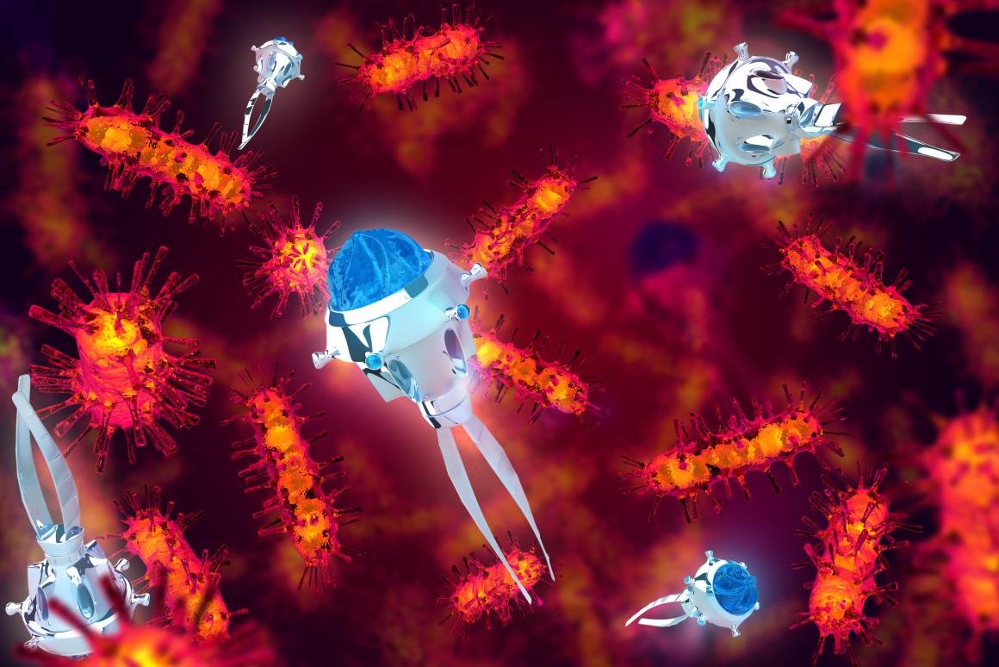

Nanobots can now be used in fighting Cancer
Tested on mice Nanobots can travel through your bloodstream and kill harmful tumor cells.
Nanobots can be used for surgical purposes
Nanobots now have the potential of preforming non-evasive surgical procedures

Nanotechnolgy used for drug delievery.
Scientits have reported ways nanobots can seek area's of damage and deliever the drug right to them.